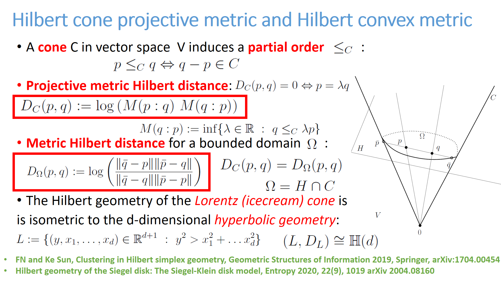
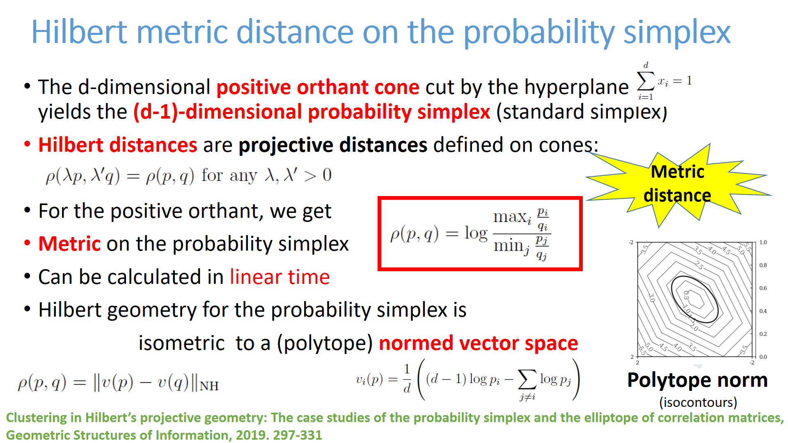
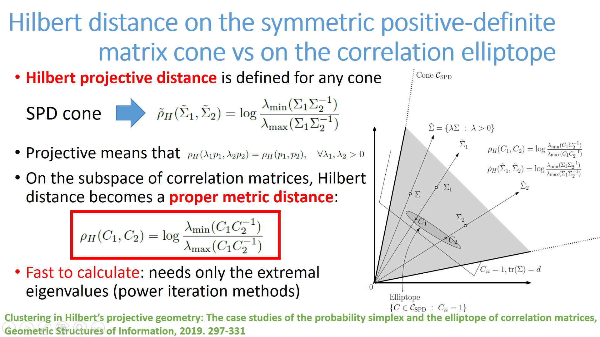
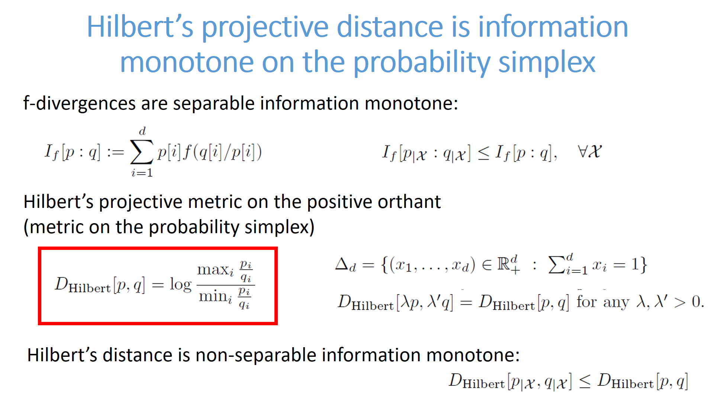

@incollection{HSEG-2019,
title={{Clustering in Hilbert’s projective geometry:
The case studies of the probability simplex and the elliptope of correlation matrices}},
author={Nielsen, Frank and Sun, Ke},
booktitle={Geometric Structures of Information},
pages={297--331},
year={2019},
publisher={Springer}
}
@article{HSG-2017,
title={{Clustering in Hilbert simplex geometry}},
author={Nielsen, Frank and Sun, Ke},
journal={arXiv preprint arXiv:1704.00454},
year={2017}
}